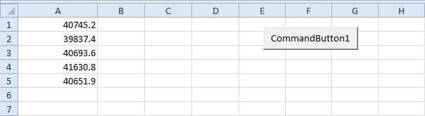
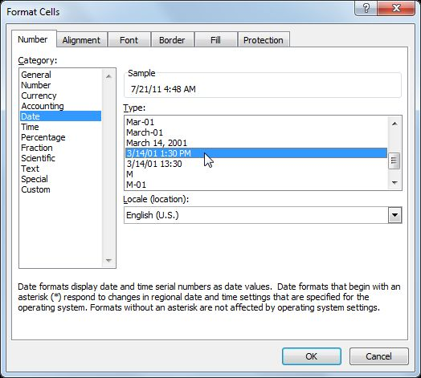
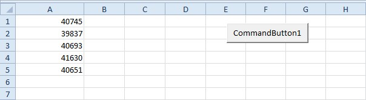
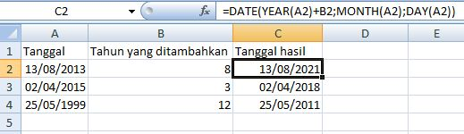

Cara Excel menyimpan tanggal
Excel menyimpan tanggal sebagai nomor urut hari sejak 1 Januari 1900. Karena itu tanggal bisa dikurangkan atau ditambah seperti angka biasa.
=DATE(tahun; bulan; hari) =TODAY() =NOW()
| DATE | Membuat tanggal dari tiga angka |
|---|---|
| TODAY() | Tanggal hari ini, berubah tiap hari |
| NOW() | Tanggal dan jam saat ini |
Langkah praktik
- Ketik tanggal dengan pola sesuai pengaturan regional, misalnya 02/10/2026.
- Bila tampil sebagai angka, ubah format sel menjadi Short Date.
- Hitung selisih dengan pengurangan: =B2-A2.
- =A2+30 menghasilkan tanggal 30 hari setelah A2.
Tangkapan layar praktik



